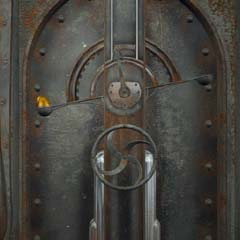
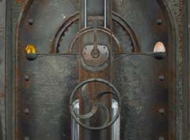

| 概要 | 地図 | |
| 淡いヒント集 | ヒント集 | 的確なヒント集 |
| 攻略最短ルート | Syberia 攻略へ |
| << 前の段階へ | 地域選択へ | 次の段階へ >> |
バロクシュタット
|
演奏台の修理と機関車の移動1

演奏台の中を調べるには、この扉を開かなくてはならない。見ての通り、ハンドルの上に天秤があり、釣り合っていない。この天秤が釣り合えば、ハンドルが回るように作られているので、カッコウの卵を乗せてみよう。天秤は釣り合い、ハンドルを回すことができる。


演奏台の地下にはこのようなカラクリがあった。修理するのに、特別な部品は必要ない。ただ、レバーを引けばいいのだ。  演奏台を修理したことにより、学長からお金を受け取ったら、船のあるところへ行き、お金を渡そう。機関車を引くのを、船員達は快く引き受けてくれるだろう。 ただし、機関車を動かすには船を移動しなくてはならない。船を動かすには、水門を操作するのだがその操作方法はどこで知ることができるだろうか。 
船員からもらった鍵を使えば、この装置のパネルを開くことができる。 看板に書いてあった番号に電話をすると、ナビゲーションが始まるだろう。そして、ナビゲーションに従い操作するにはどうしたらいいかを聞くと、最後の最後に「手動で操作するには・・・」と言ってくるはずだ。 つまり、あなたがナビゲーションに従って押したボタンを、水門を制御する装置にも打ち込めばいいのだ。はじめはバロクシュタットの「４」である。そして次は「２」、最後は「＊」だ。 |
| << 前の段階へ | 地域選択へ | 次の段階へ >> |
| 概要 | 地図 | |
| 淡いヒント集 | ヒント集 | 的確なヒント集 |
| 攻略最短ルート | Syberia 攻略へ |
Syberia
| 目次へ戻る | ページの上部へ |